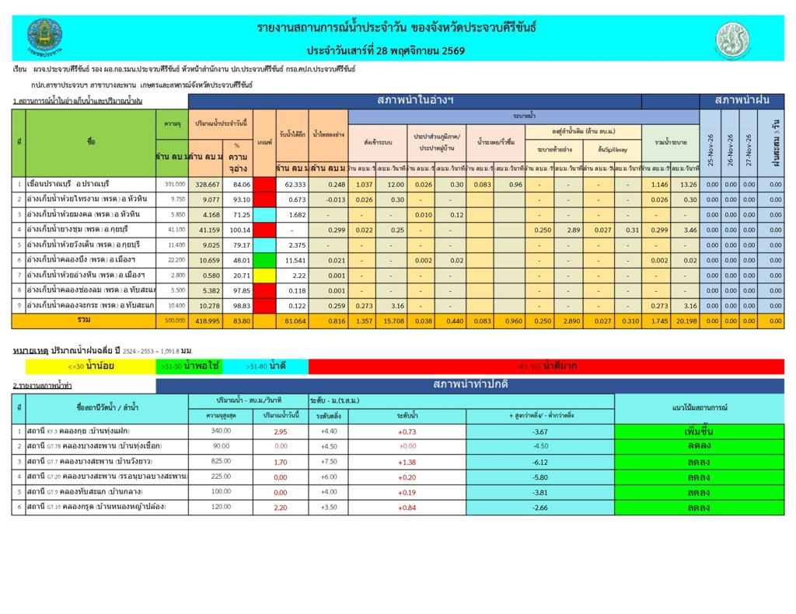

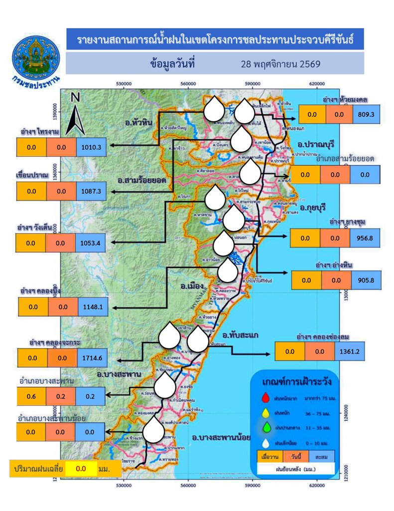

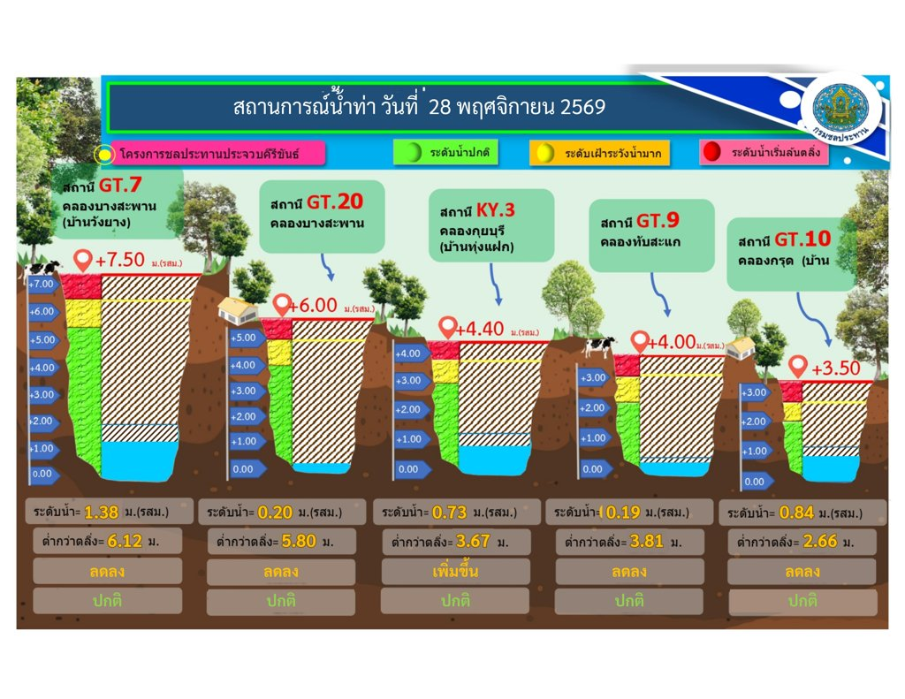

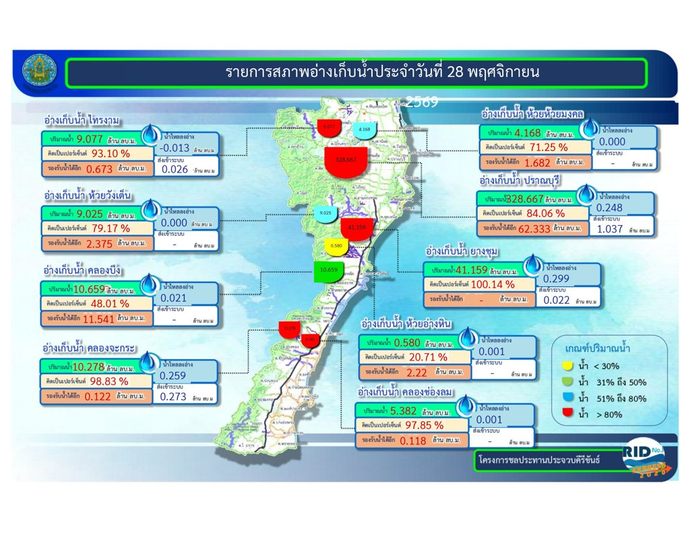

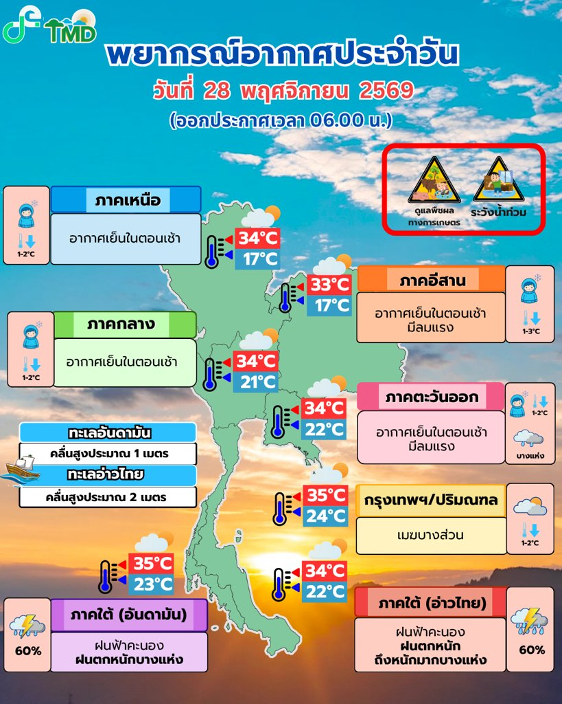

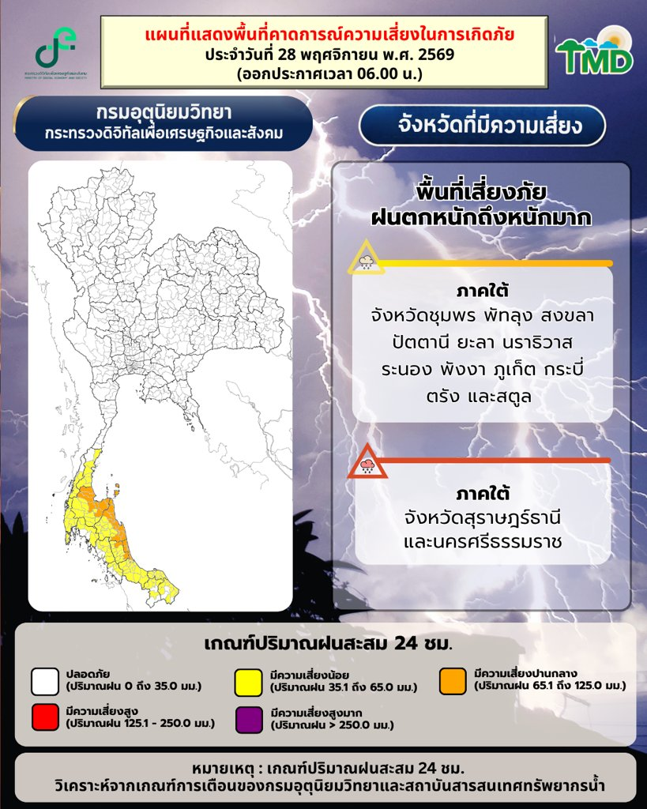

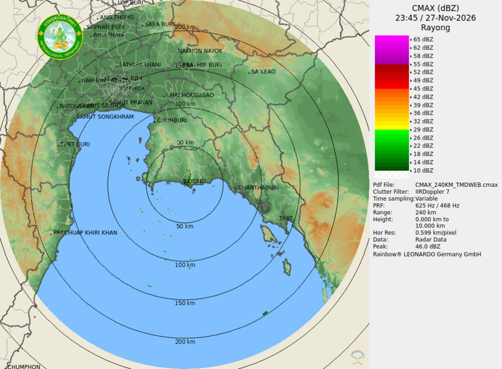

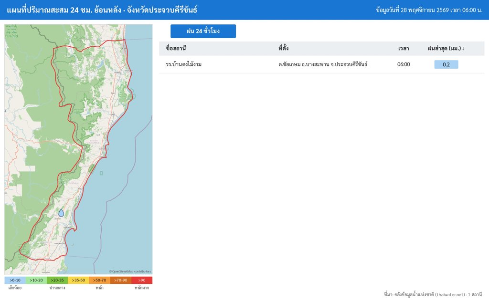

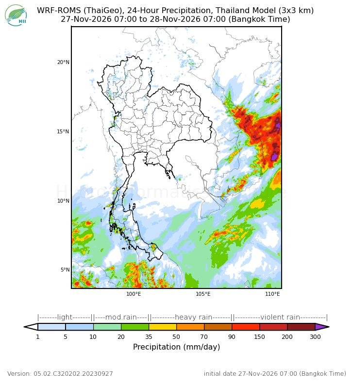

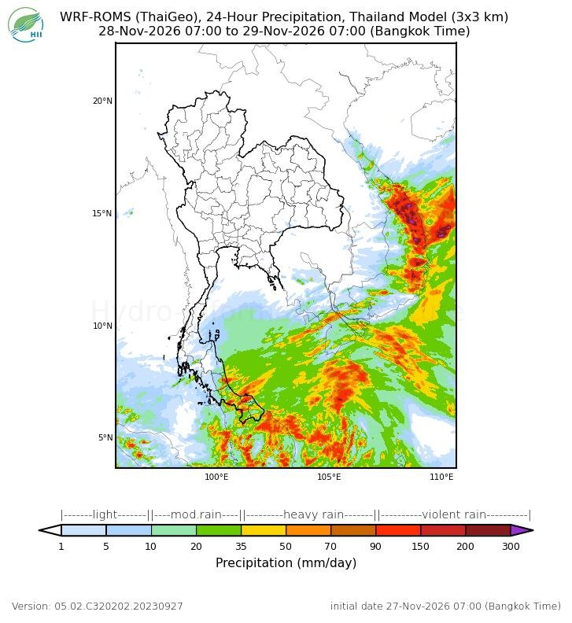

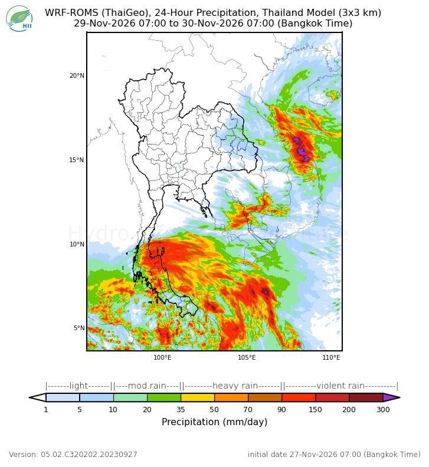

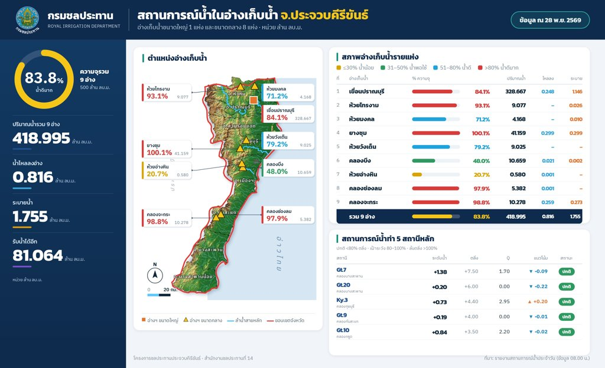

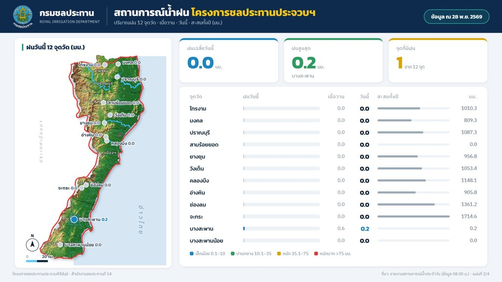

ข้อความส่ง LINE
เรียน Swoc RID14
โครงการชลประทานประจวบคีรีขันธ์ขอสรุปรายงานสถานการณ์น้ำของอ่างเก็บน้ำขนาดกลางทั้ง 8 แห่ง ในจังหวัดประจวบคีรีขันธ์ ซึ่งรายละเอียดข้อมูลปริมาณน้ำ ประจำวันที่ 28 พฤศจิกายน 2569 ดังนี้
1.)อ่างฯห้วยไทรงาม ต.หนองพลับ อ.หัวหิน
-ปริมาณน้ำเก็บกัก 9.750 ล้าน ลบ.ม.
-ปริมาณน้ำ 9.077 ล้าน ลบม.
-คิดเป็น 93.10 %
-inflow 0.000 ล้าน ลบม.
-outflow 0.026 ล้าน ลบม.
-ปริมาณฝน 0.0 มม.
2.)อ่างฯห้วยมงคล ต.ทับใต้ อ.หัวหิน
-ปริมาณน้ำเก็บกัก 5.850 ล้าน ลบ.ม.
-ปริมาณน้ำ 4.168 ล้าน ลบม.
-คิดเป็น 71.25 %
-inflow 0.000 ล้าน ลบม.
-outflow 0.010 ล้าน ลบม.
-ปริมาณฝน 0.0 มม.
3.)อ่างฯยางชุม ต.หาดขาม อ.กุยบุรี
-ปริมาณน้ำเก็บกัก 41.100 ล้าน ลบ.ม.
-ปริมาณน้ำ 41.159 ล้าน ลบม.
-คิดเป็น 100.14 %
-inflow 0.299 ล้าน ลบม.
-outflow 0.299 ล้าน ลบม.
-ปริมาณฝน 0.0 มม.
4.)อ่างฯห้วยวังเต็น ต.หาดขาม อ.กุยบุรี
-ปริมาณน้ำเก็บกัก 11.400 ล้าน ลบ.ม.
-ปริมาณน้ำ 9.025 ล้าน ลบม.
-คิดเป็น 79.17 %
-inflow 0.000 ล้าน ลบม.
-outflow 0.000 ล้าน ลบม.
-ปริมาณฝน 0.0 มม.
5.)อ่างฯคลองบึง ต.อ่าวน้อย อ.เมืองประจวบฯ
-ปริมาณน้ำเก็บกัก 22.200 ล้าน ลบ.ม.
-ปริมาณน้ำ 10.659 ล้าน ลบม.
-คิดเป็น 48.01 %
-inflow 0.021 ล้าน ลบม.
-outflow 0.002 ล้าน ลบม.
-ปริมาณฝน 0.0 มม.
6.)อ่างฯห้วยอ่างหิน ต.อ่าวน้อย อ.เมือง
-ปริมาณน้ำเก็บกัก 2.800 ล้าน ลบ.ม.
-ปริมาณน้ำ 0.580 ล้าน ลบม.
-คิดเป็น 20.71 %
-inflow 0.001 ล้าน ลบม.
-outflow 0.000 ล้าน ลบม.
-ปริมาณฝน 0.0 มม.
7.)อ่างฯคลองช่องลม ต.เขาล้าน อ.ทับสะแก
-ปริมาณน้ำเก็บกัก 5.500 ล้าน ลบ.ม.
-ปริมาณน้ำ 5.382 ล้าน ลบม.
-คิดเป็น 97.85 %
-inflow 0.001 ล้าน ลบม.
-outflow 0.000 ล้าน ลบม.
-ปริมาณฝน 0.0 มม.
8.)อ่างฯคลองจะกระ ต.นาหูกวาง อ.ทับสะแก
-ปริมาณน้ำเก็บกัก 10.400 ล้าน ลบ.ม.
-ปริมาณน้ำ 10.278 ล้าน ลบม.
-คิดเป็น 98.83 %
-inflow 0.259 ล้าน ลบม.
-outflow 0.273 ล้าน ลบม.
-ปริมาณฝน 0.0 มม.
ทั้งนี้ โครงการฯได้ปรับแผนบริหารจัดการน้ำ ในอ่างเก็บน้ำให้อยู่ในเกณฑ์เหมาะสมของกรมฯตาม Rule Curve และบริหารจัดการน้ำตามแผนการเพาะปลูกพืชฤดูแล้งปี 2568/69 ที่ได้วางแผนไว้แล้วต่อไป
จึงเรียนมาเพื่อโปรดทราบ
Swoc RID ปข.
28 พ.ย. 69 (08.00)